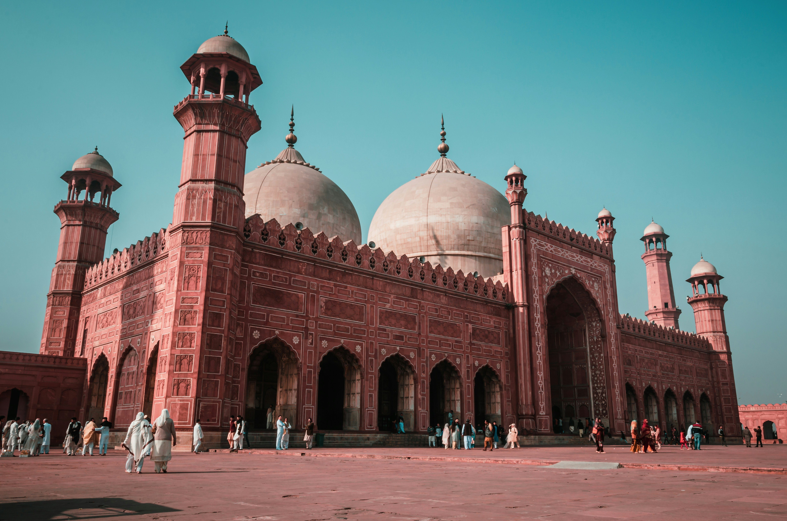
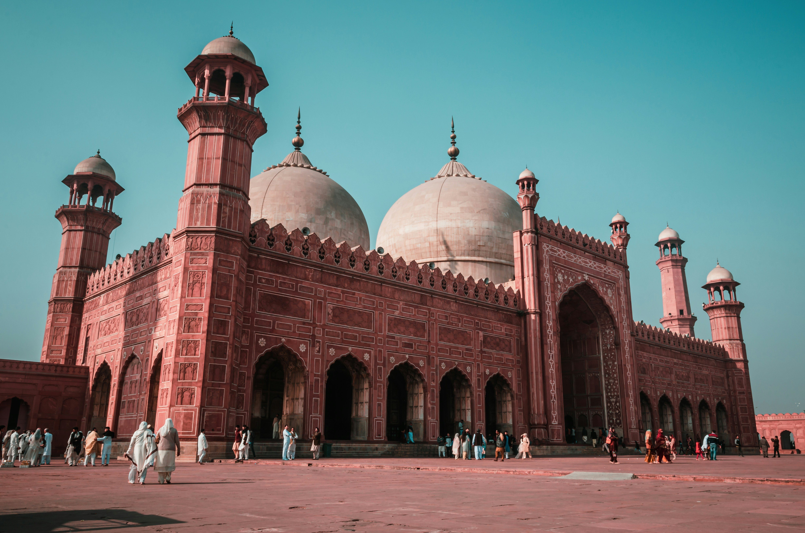

About Pakistan
Are you ready for an adventure like no other? Welcome to Pakistan, a country brimming with diverse landscapes, rich cultural heritage, and warm hospitality. Whether you're an intrepid explorer, a history enthusiast, or a foodie looking for new flavors, Pakistan has something to offer for everyone. Let's embark on a journey together and uncover the treasures of this captivating land.
Step into the serene beauty of Islamabad, the capital city of Pakistan, and behold the magnificent Faisal Mosque. As one of the largest mosques in the world, Faisal Mosque stands as a symbol of architectural grandeur and spiritual tranquility. Its stunning white marble façade and unique design make it a must-visit destination for tourists seeking moments of serenity and reflection amidst the hustle and bustle of city life.
Venture further into Islamabad and you'll encounter the iconic Pakistan Monument, a symbol of national pride and unity. Shaped like a blossoming flower, this architectural marvel pays homage to the heroes and events that shaped Pakistan's history. Take a leisurely stroll through its lush green gardens, soak in panoramic views of the city, and immerse yourself in the rich tapestry of Pakistan's culture and heritage.
No trip to Pakistan is complete without a visit to Lahore, the cultural capital of the country, where you'll find the majestic Badshahi Mosque. Built during the Mughal era, this architectural masterpiece is a testament to the grandeur and opulence of the past. Marvel at its intricate marble carvings, intricate frescoes, and towering minarets as you step back in time and experience the glory of Mughal architecture.
But Pakistan isn't just about history and architecture—it's also a paradise for nature lovers and food enthusiasts. Explore the lush valleys of Swat and the rugged mountains of Gilgit-Baltistan, where you can indulge in thrilling adventures like trekking, mountaineering, and paragliding. And when it comes to food, prepare your taste buds for a culinary journey like no other. From spicy curries and kebabs to savory biryanis and sweet delights like gulab jamun, Pakistan's cuisine is sure to tantalize your senses and leave you craving for more.
In conclusion, Pakistan is a land of endless wonders waiting to be explored. Whether you're seeking spiritual enlightenment, cultural immersion, or simply a break from the ordinary, Pakistan offers a myriad of experiences that will leave you enchanted and inspired. So pack your bags, set out on an unforgettable adventure, and let Pakistan's beauty and charm captivate your heart. Your next great adventure awaits in Pakistan—don't miss out on the opportunity to experience it for yourself!

 
